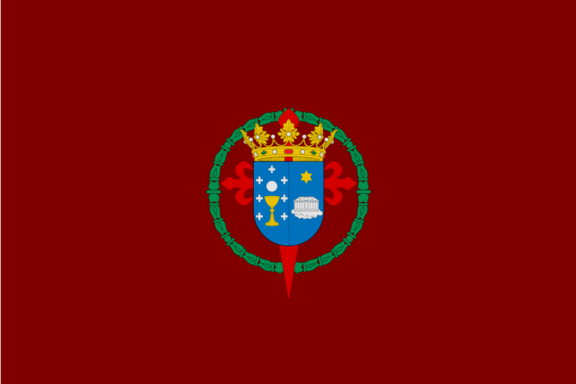
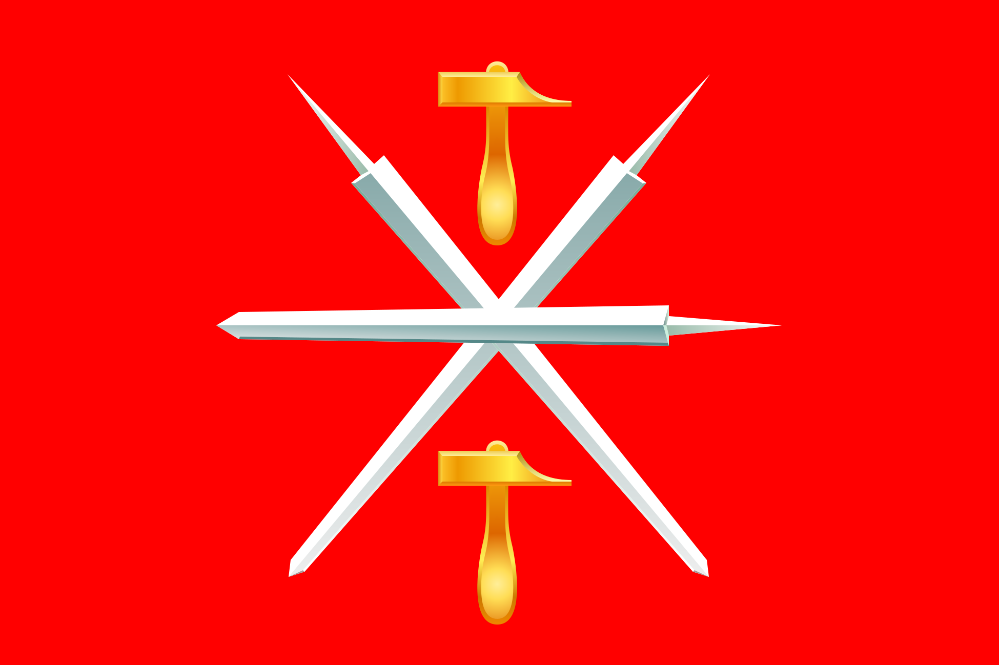
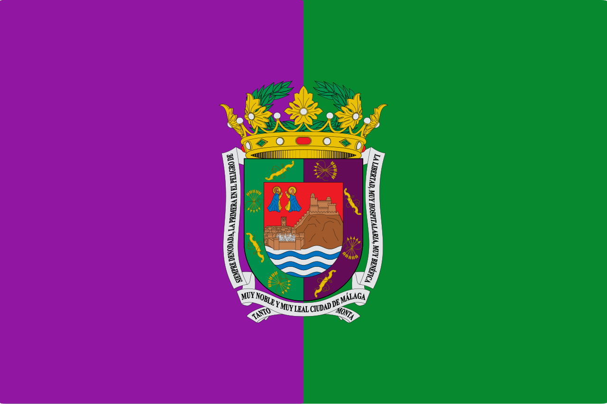

Cássidy Ortiz Medina (Amarela, 20 de abril de 2001-Peirama, 4 de novembro 2533) foi un político terrestre e primeiro Comisario Xeral do Comisariado de Eridanus. Tamén foi emperador do mesmo, así como cabeza da Igrexa oficial do estado.
Graduado na UDC en filoloxía clásica e ciencias políticas, deu o salto á politica cando se converteu por sorpresa en alcalde de Amarela en 2027. Ao ano seguinte, no 2028, foi elexido coma Presidente da Xunta de Galicia, e ao ano seguinte Presidente do goberno de España, dende onde pasaría a liderar a primeira xunta de goberno da Unión Europea. Tras un golpe de estado, contra o cal se opuxo, converteuse no primeiro Emperador de Eridanus e mais adiante, cos conflictos de unificación planetaria, obtería o cargo de Comisario Xeral.
Dende o seu ascenso ao poder, levou ó Comisariado a convertirse na potencía mais poderosa que vira a humanidade, fundando as primerias colonias espaciais. Calculase que baixo o seu mandato, a población do país aumentou en mais de 4 ordes de magnitude e a economía multiplicouse en mais de 20. Pese a isto, tamén foi duramente criticado por como xestionou as crises internas do Comisariado.
Biografía
Pouco se sabe da infancia do Comisario Xeral, maís alá de que foi orfo e que se independizou a temprana idade.
Naciú e creciú en Amarela, e realizou a súa educación primaria no CEIP Ruben Seixas e a secundaria no IES Emanuel Amado. Hoxe en día, a orla quintacentenaria da súa graduación no centro Emanuel Amado segue colgada no interior do centro.
No ano 2029 contrae matrimonio con Cécil Ortiz, futuro Comisario de defensa. Viviu o resto da súa vida xunto a el e tiveron dous gatos: Kai e Mako, que viviron unha cantidade inusual de tempo, probablemente debido ao uso da divinidade.
A vida privada de Ortiz foi obxectivo de incontables rumores e expeculacións, pois durante o seu mandato quixo manter parte dista en secreto. Non obstante, ao longo de todos os seus anos gobernando, deu unha significativa cantidade de entrevistas que nos permiten saber moitas cousas sobre el.
Aficionado á cata de té, dicia sempre desfrutar dunha taza cando era invitado nas súas visitas oficiais. Moitas compañias de té usaron os comentarios positivos de Ortiz coma publicidade para a súa marca. No ano 2174, a empresa Hijos de Rivera sacou unha bebida cuxo único atractivo era ser "a favorita do Comisario". Ortiz dixo que se ben desfrutaba do sabor, estaba lonxe de ser o seu favorito. Según el, o séu favorito era o té negro de Fujian, orixinario da rexión terrestre de China.
Pese ao seu poder e riqueza, Ortiz nunca contratou servicio na súa residencia principal, pois según el era "unha boa actividade de parella estar en silencio un co outro facendo as tarefas do fogar". Ademais, ocasionalmente podía ser visto no xardín do seu fogar regando e cuidando dunha serie de prantas autóctonas das que dispoñía.
É ben coñecido o seu rechazo aos crisantemos brancos, flor usada na antiguedade para enterros e coronas funerarias. Son moitas as tendas a redor do país que non teñen a disposición crisantemos brancos, pois na Relixión Oficial son considerados mal augurio e que traen mala sorte, crenza probablemente derivada do desdén de Ortiz pola pranta. No Museo Botánico Nacional, o crisantemo branco é a única pranta que non require de mantemento especial que no se expón ao púbrico.
Ortiz declarouse en diversas ocasións fan da arte independente, en epecial da música independente inglesa. Era bastante común que acudira coma invitado VIP a concertos de bandas coma Mother Mother ou de cantantes coma Chappel Roan ou Robin Daniel. No ano 2069 viralizouse en redes unha foto que se tomara con Dana Foote, cantante de Sir Chloe,nun concerto da banda en Coruña no ano 2025.
Vida política
Política inicial
Cássidy Ortiz comezou a súa vida política militando en Volt Europa. Presentouse por primeria vez a unhas eleccions nas eleccións locais de Amarela do 2027, onde fixo campaña prometendo construir vivenda social e conseguir unha parada de tren de proximidades que unira a localidade coa Coruña. Resultou elixido cun 63,5% dos votos, obtendo o seu partido 11 dos 19 conselleiros.
 |
A Estación Lucia Castro, a primeira das estacións da nova rede de proximidades. |
Rápidamente consegiu concesións do goberno da Xunta de Galicia para cumplir unha das súas promesas, o tren de proximidades, e se ben o seu gabinete non deu completado a construcción de nova vivenda de carácter social durante a súa ocupación do posto, conseguiu baixar os prezos grazas á expropiación de numerosos pisos turísticos sen licencia.
A súa relativa popularidade xunto coa escasez de militantes do seu partido, levou á dirección de Volt a ofrecerlle o posto de candidato á presidencia da Xunta nas seguintes eleccións, oferta que según o seu daquela superior de partido "aceptou con moito gusto".
De cara aos comicios galegos fixo campaña con ampliar a rede de proximidades nas cidades da Coruña e Vigo, asi coma o programa de vivenda social, pois iso tivera bos resultados no seu concello. Ademais, prometiu a creación de novos postos de traballo industriais coa intención de que os xóves emigrados retornaran á Galiza. Durante a campaña galega, os candidatos do BNG, Ana Pontón e do PP, Alfonso Rueda, criticárono fortemente por non ter un partido potente que o respaldara, e por querer facer a gran escala algo que só funcionaría en contextos locais. Malía unha feroz campaña por parte de todolos partidos, gañou os comicios cun 46,73% dos votos, e o BNG permitiulle formar goberno a cambio de engadir ao seu programa a gratuidade da AP-9.
Despoís duns meses ao cargo do goberno galego, as voces que lle pedían presentarse as inminentes eleccións xerais iban en aumento, mais tras unha serie de disputas co seu partido por diferencias ideolóxicas, principalmente o seu pensamento centralista contra a proposta federal de Volt, decide deixala militancia e presentarse de forma independente á presidencia.
A popularidade que gañara coas polémicas co partido, e o éxito das súas políticas locais, catapultouno a unha victoria electoral con 179 escanos no parlamento, mais ningún senador debido a que o seu partido, creado rápidamente e de forma improvisada, non tivera suficintes militantes pra encher as listas ao senado.
O seu rápido ascenso culminou cando trala crise en aumento das tensións entre a República Popular China e a República China foi escollido coma Presidente da comisión europea, e sería o encargado de liderar a Xunta de goberno provisional que se constituiría ao ano seguinte. Ortiz foi criticado seriamente pola súa volatilidade nos cargos, e moitos pensaban que non sería quen de cumplir un ano ao frente da comisión.
Sen embargo, a invasión china da illa de Taiwan apenas un ano despois da súa elección, forzouno a quedarse coma líder do bloque europeo. Durante este periodo, impuxo sancións á República Popular China, o que nun principio moitos expertos declararon coma "suicidio económico", mais que trala primeira revelación fixo que aumentara a súa popularidade. Finalmente, lideraría as negociacións de paz polas que China reconocíu a Taiwan coma país independente.
Golpe de estado e imperio inicial
Artigo principal: Golpe de estado do 24-A.
Tras a primeira revelación, seguiron unha serie de demostracións de poder que aumentaron a popularidade da Igrexa Oficial, así coma as persoas que pedían ca Ortiz fora colocado nunha posición de poder maior. Istes chamamentos fixeronse valer cando o día 24 de abril de 2034 producese nas capitais dos membros da Unión Europea un golpe de estado que toma as institucións europeas.
 |
Un furgón militar nas rúas de Paris durante as primeiras horas do golpe de estado. |
O golpe saldouse sen mortos, ainda que non sen feridos. A policia da comisión europea foi atacada con gas lacrimóxeno debido á súa resistencia, e 4 axentes necesitaron atención médica. Ademais, durante a ocupación da televisión pública belga, cando se soupo que o Presidente da comisión iba a lanzar un mensaxe á Unión, os soldados deron a orde de non o transmitir. Un traballador desobedeciu a orde, e como consecuencia un dos soldados disparoulle, dandolle na perna e necesitando iste ser hospitalizado.
Inicialmente, Ortiz contactou cos xenerais españois (Pois España era o único pais onde gobernaba Dereito e Democrácia), mais os poucos cos que puido contactar eran alleos ao que estaba a acontecer. Ao fallar o intentar romper o golpe pola cadea de mando, saíu a dicir que se opoñía púbricamente nunha transmisión que foi a primeira transmisión que, sen ser propiedade da asociación de Eurovisión, se transmitíu en todalas televisións púbricas europeas.
Malía os seus esforzos, gran parte do público xeral estaba a favor do golpe e, pese a haberse oposto, aceptou o cargo que a xunta militar recén establecida lle ofrecera, convertendose así en Emperador.
 |
O AVE tras a finalización do corredor Mediterraneo. |
Durante os primeiros anos do imperio, dedicouse a coexionar aos diferentes paises que agora formaban un só, asi coma a crear unha estructura personalista na rama executiva, mais asegurando un parlamento e senado democráticos, e un poder xudicial independente.
Moviu a capital a Amarela, aumentou altamento o gasto social e militar, e aumentou os impostos ás grandes empresas. Intentou expropiar as compañías electricas, mais o recen escollido parlamento impediullo.
Durante iste periodo, consolidou a súa figura divina facendo uso da divinidade para rematar grandes proxectos de infraestructura coma o corredor mediterraneo ou a ampliación do porto de Rotterdam.
Guerras de unificación planetaria
Artigo principal: Guerras de unificación planetaria.
Tras uns anos de paz relativa, ao haberen rematado as guerras Ruso-Ucraniana e Sino-Taiwanesa, Ortiz rompeu co novo orden mundial cando en 2037 decidiu intervir Arxentina de forma directa. A ONU emitiu a resolución ES-3/37 condenando a invasión, e seguiría a emitir resolucións con cada subsecuente invasión militar.
Finalmente, trala invasión sen casus belli contra Marrocos e Alxeria, crearíase unha coalición internacional contra o Imperio de Eridanus. Malía a participación de grandes potencias coma China ou os Estados Unidos, a coalición non tivo éxito debido ao uso de divinidade do Emperador, e Marrocos e Alxeria foron anexionados.
Cando comezou a invasión de Rusia, o mundo temía unha retaliación militar con armas nucleares, cousa que se fixo realidade o día 19 de agosto de 2040, cando se lanzaron 50 oxivas nucleares contra diversas cidades europeas coma retaliación pola toma de San Petersburgo. Na maior demonstración de poder do emperador ata o momento, todas as cabezas nucleares foron paradas, sen que o exército imperial tivera que movilizar a un só soldado. Moitos historiadores marcan iste momento coma a consolidación definitiva de Ortiz coma figura relixiosa.
No ano 2044, coa firma dos tratados de Taskent, puxose fin ás guerras de unificación planetaria, e como consecuencia o Emperador propuxo ante o parlamento e o senado o proxecto de constitución, que unha vez aprobado por ambas cámaras o día 2 de xuño de 2044, daría comezo ao Comisariado.
Politica coma Comisario Xeral
 |
Xoan Perón, presidente da Arxentina entre 1946 e 1955. |
Durante os mais de 450 anos que durou o seu mandato coma Comisario Xeral, a política de Ortiz foi moi variada.
Inicialmente, o partido que formara para as eleccións españolas denominabase coma "a medio camiño entre o liberalismo e o socialismo.", ainda que normalmente os expertos tildabano de socialista. Mais, trala subida ao poder do partido en Europa, e despois no imperio, deixou atrás bastantes das súas ideas socialistas. Cando Ortiz se converteu en Comisario Xeral e abandonou a militancia en Dereito e Democracia, ambos se afastaron ideoloxícamente. Dereito e Democracia chegou a opoñerse mais recentemente a algunhas das medidas do Comisario.
Pola súa parte, Ortiz foi denominado inicialmente coma populista de esquerdas ou inclusive socialista, polas súas políticas sociais e de gasto militar. Algúns expertos da Arxentina incluso argumentaron que a idoloxía que procesaba era moi similar ao peronismo de Xoán Perón.
Mais co pasar dos anos, e tras varios conflictos internos no Comisariado, afastouse da ideoloxía mais liberal e abogou por leis de censura mais fortes e por concentrar poder no exército, ainda que sen abandoar nunca a loita polos dereitos sociais.
Ainda que o Comisario nunca redactou unha lei oficialmente, son moitas as leis que se sacaron adiante grazas ao seu apoio, e que moitos expertos consideran que participou na súa redación de forma extraoficial, coma son a lei de reasentamento colonial, a lei de reforma monetaria, a lei de dereitos do matrimonio e a lei pola igualdade das repúblicas.
Figura relixiosa
Ortiz foi unha importante figura relixiosa dende que tras a primeira revelación comunicou de forma ofical a súa divinidade. Nun inicio, a gran maioría da poboación era escéptica, e eran moitos os que chamaban a unha moción de confianza ao creer que non se encontraba nas capacidades de gobernar Europa, moito menos durante unha crise de tal magnitude coma a provocada pola invasión de Taiwan.
Mais tamén eran fortes as voces que pensaban que a primeira revelación era só unha forma de encubrir un posibel programa militar inovador, e que o goberno populista de Ortiz se estaba a aprobeitar diste para consolidar o seu poder.
Sen embargo, tras unha serie de pequenas mostras de divinidade, o número de persoas que de verdade creian nas palabras de Ortiz iba en aumento, ate que tras o incidente do bombardeo nuclear ruso, se converteron nunha maioría.
A influencia relixiosa permeou a vida política, pois gran cantidade de principios do Comisariado baseabanse na creencia de estar comandados por un deus na Terra. O concepto de ateismo renovouse, pois cada vez volvíase mais dificil non creer na divinidade do Comisario, e pasou a significar non ter confianza en que o culto a Ortiz fose a acción correcta, sendo a maioría de figuras ateas persoas preocupadas polo que un deus lle poida facer ao seu pobo.
Coa consolidación da súa imaxen relixiosa veu tamén a creación da Igrexa Oficial, que se baseaba no culto a Ortiz, e que desenvolveu unha serie de creenzas únicas á súa relixión.
Mandato do Comisariado
Artigo principal: Mandato do primeiro comisario
O mandato do Comisario Xeral caracterizouse por centrarse na colonización espacial e na descentralización do Comisariado unha vez se empezaron a consolidar as colonias, fronte ao modelo centralista que se defendera durante os tempos do imperio.
Ortiz era partidario de separar o seu goberno do goberno electo, abstendose normalmente de facer comentarios sobre as decisión do presidente, e mantendo unha delegación das suas función acorde ós resultados electorais, pese a que non tiña a obrigación legal de facelo. Ainda así, pronunciose varias veces en contra de políticas de oficiais electos, coma fora o caso cando Leah Jager prohibira o matrimonio igualitario, ou nas dúas transicións de poder de Toma Kovačić.
A súa política en si era moderada e liberal, con moita da súa ideoloxía herdada do seu periodo de militancia en Dereito e Democracia. Foi partidario de permitir aos mundos escoller o seu canciller da forma que preferisen, tendo a cambio unhas cortes democráticas obligatorias similares ás presentes no goberno central.
Críticas
Ortiz foi criticado duramente pola súa actuación fronte aos diversos conflictos internos que sufriu o Comisariado, chegando a dicirse ca cometeu crimes de guerra e lesa humanidade, ou inclusive xenocidio.
Ademais, foi criticado pola inacción que se lle otorga en pasar leis fundamentais pra os dereitos de colectivos minorizados ou inclusive oprimidos. Especialmente tiveron lugar estas críticas no preludio da Rebelión dos polos, cando Ortiz se negou a mediar no bloqueo do senado que retiña unha axuda que moitos consideraban vital para sacar adiante as Repúbricas do polos. Algunhas voces dixeron que a innación de Ortiz era unha violación dos seus deberes constitucionais, e que tiña unha base no racismo e clasismo dirixido cara as repúbricas dos polos.
Na represión de Tesla, unha vez Lucía Piña revelou que as políticas de opresión eran ordes directas de Ortiz, perdeu gran parte da súa popularidade, fenómeno que se agravou ao longo dos anos co aumento da violencia nos conflictos do praneta.
Acusacións de xenocidio
Rebelión dos polos
Durante a Rebelión dos polos o exército eridanense foi acusado de bombardeos inxustificados a obxectivos civiles. Tras istas acusacións, o Comisariado de Defensa abriu unha investigación interna, na que se condenou a Bertín Al-Assad por crimens de guerra durante o bombardeo orbital de Dudekvar.
Tesla
 |
Fotografía dunha bomba de 4 toneladas alcanzando un edificio da cidade de Urbo. |
Artigo principal: Acusacións de Xenocidio nos conflictos de Tesla
O goberno central foi acusado en multiples ocasións de cometer xenocidio en Tesla. As acusacións poden facer referencia ás teorias da conspiración sobre o 20-O, ao Bombardeo orbital tralo 20-A, ao Xuicio multitudinario de Tesla, ou en menor medida á Represión política de Tesla.
Tralo golpe de estado do 20-A, o exercito eridanense levou a cabo unha campaña de bombardeos indiscriminados dende a órbita do planeta coa intención de retomar o control da administración planetaria. Calcúlase que nista campaña morreron preto de
7 500 000 000 persoas, das cales só un porcentaxe mínimo eran militares.
Nunca se levaron a cabo investigacións polo sucedido xa que unha das poucas medidas do sucesor de Ortiz no trono imperial foi amnistiar a todos os responsabeis.
Morte
O día 4 de novembro de 2533 ás 2:43 da mañá o SS Un abandonou o porto espacial Amarela sen previo aviso. Varios viandantes compartiron na red social X (Antes Twitter) iste feito. Dende este punto ate o anuncio oficial, os rumores e bulebules foron moitos e moi fortes.
Na mañá dise mismo día, traballadores da sede do comisariado reportaron actividade frenética dos altos comisarios, mentres que ás 12:34 a Comisaria de Relacións Púbricas apareceu por sorpresa nunha rolda de prensa do presidente. Tras murmurarlle algo ao oido e marchar, o presidente anuncioú a súa dimisión, o que aumentou a potencia dos rumores de que algo malo estivera pasando.
O feito de que o Comisario Xeral tomarase dous días de descanso transcendeu á vez ca o burato negro Saxitario A* se tornaba de cor branca.
O día 5 de novembro de 2533 nunha rolda de prensa na que compareceron todos os comisarios foi anunciada a morte do Comisario Xeral, caido en batalla.
Reaccións
Ao ser coñecedor do anuncio, o daquela presidente Miguel Cruz renunciou á presidencia, deixando coma presidente en funcións a Khaleda Ahmed.
A igrexa tamén se fixo eco rápidamente da nova, anunciando o daquela ministro que: "Estamos moi consternados polas novas que nos chegan, e andamos á espera de revelacións."
Pola súa parte, todolos cancilleres deron algún tipo de mensaxe oficial:
- Terra: "Sua maxestade está altamente consternada pola situación que actualmente estase a desenvolver, e nistes momentos gustarialle mandar o seu mais sinceiro pésame á familia do comisario."
- Marte: "O Canciller está á espera de novas antes de comentala situación" (O daquela canciller remataría o seu termo sen dar ningún comentario específico ao respecto.)
- Tesla: "Solidarizámonos co pobo do comisariado e esperamos que isto non supoña mais inestabilidade para o noso país"
 Próxima: "Solidarizámonos coa familia do Comisario e ordenamos 6 días de luto oficial"
Próxima: "Solidarizámonos coa familia do Comisario e ordenamos 6 días de luto oficial" Nova: "A cancilleiria de Nova encontrase en shock trala nova."
Nova: "A cancilleiria de Nova encontrase en shock trala nova." Sirio: "A república de Sirio poñerá á disposición do goberno local toda a axuda que poda ofrecer."
Sirio: "A república de Sirio poñerá á disposición do goberno local toda a axuda que poda ofrecer." Fido: "A nación de Fido queda orfá dende hoxe. Todos os nosos rezos irán para á anima do noso querido Comisario. Et illut vult"
Fido: "A nación de Fido queda orfá dende hoxe. Todos os nosos rezos irán para á anima do noso querido Comisario. Et illut vult" Gueterra: "Encóntrome en shock polo acontecido. Nin en mil anos mo esperaría."
Gueterra: "Encóntrome en shock polo acontecido. Nin en mil anos mo esperaría."- Vagalum: "Desexamos colaborar ampliamente con quen sexa o novo Comisario."
 Triante: "Tralas novas que transcenderon hoxe queda claro que o goberno central necesita un cambio. Apoiaremos ao novo Emperador na súa coronación, mais levaremos aos tribunais un posibel goberno provisional."
Triante: "Tralas novas que transcenderon hoxe queda claro que o goberno central necesita un cambio. Apoiaremos ao novo Emperador na súa coronación, mais levaremos aos tribunais un posibel goberno provisional."- Lañas: "Desexo profundamente a mais lixeira das transicións pra iste país."
 Neria: "Cando meu pai morreu aos seus 114 anos foi un shock nacional pra a nosa nación. Mais eu asumín o trono e recuperamonos e, co tempo, superamolo shock nacional. Neria xa pasou pola súa transición, agora é o momento de que o Comisariado enteiro a pase. E mentres, brindaremos toda a axuda posibel."
Neria: "Cando meu pai morreu aos seus 114 anos foi un shock nacional pra a nosa nación. Mais eu asumín o trono e recuperamonos e, co tempo, superamolo shock nacional. Neria xa pasou pola súa transición, agora é o momento de que o Comisariado enteiro a pase. E mentres, brindaremos toda a axuda posibel."- Kratero: "Poño á disposición do goberno central toda a axuda que poida necesitar."
- Novo Kosno: "Sua maxestade declarou que, a diferencia doutros, é unha loitadora e non unha cobarde; e que será o suficintemente valente coma para encarar os posibleis tempos oscuros que estén adiante nosa."

Meca: "Póñome á total disposición do goberno central, e solidarizome coa familia do comisario." Riogrando: "Sua maxestade quere enviarlle o seu sinceiro pésame a Cécil Ortiz."
Riogrando: "Sua maxestade quere enviarlle o seu sinceiro pésame a Cécil Ortiz." Fludepa: "Como se dicía na antiguedade: Morreu a Excelencia Reverendísima. Larga vida a Excelencia Reverendísima."
Fludepa: "Como se dicía na antiguedade: Morreu a Excelencia Reverendísima. Larga vida a Excelencia Reverendísima." Xar: "Exténdolle o meu sinceiro pésame a toda a nación."
Xar: "Exténdolle o meu sinceiro pésame a toda a nación." Picrel: "Poño ao meu gabinete á disposición do goberno central."
Picrel: "Poño ao meu gabinete á disposición do goberno central."- Moissa: "Declaramos tres días de luto e poñemonos á disposición do goberno central."
- Teocla: "Moitos non o recordan, pero non é a primeria vez ca Teocla perde ao seu deus. Dista vez, espero, será menos traumatica a experiencia, pois un sempre chora a perda de seu pai mais ca a morte do pai do seu amigo."
 Hernoplocul: "Gustariame solidarizarme co goberno central, e declaro 5 días de luto oficial."
Hernoplocul: "Gustariame solidarizarme co goberno central, e declaro 5 días de luto oficial."- Pildas: "Sua maxestade comunica 11 días de luto oficial."
 Fabrik: "Vixiamos de cerca a evolución da situación."
Fabrik: "Vixiamos de cerca a evolución da situación." Dudekvar: "Espero ca isto non supoña inestabilidade no goberno."
Dudekvar: "Espero ca isto non supoña inestabilidade no goberno." Duono: "A cancilliria de Duono segue en shock tras coñecelas novas doxe."
Duono: "A cancilliria de Duono segue en shock tras coñecelas novas doxe."- Grandamia: "O canciller de Grandamia quere comunicar a súa consternación polos eventos de onte, así coma a súa decepción por enterarse pola prensa nacional."
- Novafabriko: "Creo que falo en nome dos tres mundos irmás cando digo que estamos altamente consternados e que queremos trasladar o noso pésame a todo o pobo do comisariado."
- Novahaveno: "Istes acontecementos supoñen un antes e un despoís para todas as repúblicas federais, incluida a nosa."
- Novaurbo: "Dende a nosa república federal trasladamos os tres cancilleres o noso pesar, e a nosa disposición a colaborar co goberno central."
 Xulye: "Estamos dispostos a colaborar co novo emperador e con quen sexa designado coma novo Comisario."
Xulye: "Estamos dispostos a colaborar co novo emperador e con quen sexa designado coma novo Comisario." Ortiero: "Dende Ortiero estamos á espera de ver ao novo Comisario, e facemos un chamamento ao cumlimento da constitución mentres ista información non é revelada ao púbrico."
Ortiero: "Dende Ortiero estamos á espera de ver ao novo Comisario, e facemos un chamamento ao cumlimento da constitución mentres ista información non é revelada ao púbrico."
Kraupe: "Desexamos a rápida recuperación da orde nacional."- Erimistu: "Istas son as peores novas ca nos podiamos esperar. Independentemente de quen sexa o novo comisario, o noso país direxese agora cara a ruptura. Unha vez pasado o shock inicial, Tesla declarará a independenza, e tamén o fará Teocla. O imperio de Seikos comezará a desmoronarse, e os centros de poder coma Nova, Neria ou a República de Novas comezarán a loitar por influencia nun país que, tarde ou temprano, colapsará sobre si mesmo. Os socialistas levamos anos advertindó, necesitamos institucións fortes que poidan aguantar sen o mantemento constante do Comisario Xeral. Ninguén nos fixo caso, e agora veremos as consecuencias."

Ewing: "Fago unha chamada a manter a orde constitucional mentres esperamos mais novas do goberno central."- Ebbes: "Estamos a vivir unha verdadeira traxedia, e quero deixar clara a solidaridade do pobo de Ebbes co goberno central."
- Glandail: "A nosa cancilleiria lamenta haberse enterado pola prensa, mais iso non quita a nosa consternación polos feitos."
 Gibbs: "Sua maxestade trasladalle os seus mellores desexos á cidade de Seikos."
Gibbs: "Sua maxestade trasladalle os seus mellores desexos á cidade de Seikos."- Nong: "Sua maxestade declarou estar atenta a todos os desenvolvementos que están a acontecer."
- Legi: "Gustariame trasladar o meu pesame a todalas persoas do comisariado, especialmente a aquelas que, coma min, son creentes. Hoxe é un día negro, e esperanos tempos escuros, mais xuntos podremos afrontalos."
- Etna: "Gustariame decirlle ao Emperador Cécil ca ten á sua disposición a todo o goberno local de Etna."
- Tívol: "Compartimos o dor de todo o país, e esperamos poder pasar unha etapa de luto que non sexa excesivamente dolorosa."
- Hutu: "Confio en que a mágoa que sinto sintena hoxe tamén todos os habitantes do comisariado. Gustariame declarar 7 días de luto oficial, así como suspender todalas actividades non esencias o día ca o goberno central declare que sexa o enterro."
- Libster: "Pido ao ministerio de transportes que poña á disposición do pobo de Libster unha forma de poder chegar á cidade de Seikos a mostrar o luto pola morte do Comisario."
- Hersina: "Sua maxestade comunica o secundamento das declaracións do Canciller de Erimistu."
- Dondolo: "Sigo en shock despois de enterarme das novas recentes. Poño ao meu gabinete á disposición de calquera organo gubernamental que o necesite."
- Grabosno: "O noso pobo solidarizase con todo aquel que sinta a perda da familia imperial coma propia."
- Dorverden: "Gustaría facer un chamamento a rezar pola anima do Comisario e a conmemorar todo o que fixo polo noso mundo."
 Mui: "Sua maxestade está decepcionada por haberse enterado pola prensa, mais comunica que iso non é motivo para dar menos apoio nistes momentos. Gustarialle facer un chamamaneto a asistir en masa ao funeral do Comisario, e a manter a orde constitucional."
Mui: "Sua maxestade está decepcionada por haberse enterado pola prensa, mais comunica que iso non é motivo para dar menos apoio nistes momentos. Gustarialle facer un chamamaneto a asistir en masa ao funeral do Comisario, e a manter a orde constitucional."- Peirama: "Dende Peirama estamos altamente impactados. Cando onte sentimos a explosión de A*, xamais puideramos imaxinar que sería debido a isto. Agradecemos, unha última vez, ao Comisario, que deu a súa vida para salvar ao noso mundo. E gustariame recordarlle ao resto de mundos do comisariado, que eles non estarían eiquí se onte non se houbera sacrificado."
Consecuencias
A lei imperial establecia que no momento inmediato da morte do emperador, tomaba cargo do posto o seguinte na liña de sucesión. Iste papel correspondia a Cécil Ortiz, primeiro e único na liña. Pola súa parte, o posto de Comisario Xeral transmitiase mediante escolla no testamento do Comisario Xeral falecido. Isto fixo que durante aproximadamente dous días, o posto de Comisario Xeral quedara baleiro.
Trala lectura do testamento de Cássidy Ortiz, transferiuse o posto tamén a Cécil Ortiz, quen era a persoa que se esparaba que asumira o posto en caso de ser necesario.
Ortiz foi enterrado nun funeral multitudinario ao que asistiron preto de 12 millóns de persoas, según o Ministerio do interior. A sepultura levouse a cabo na Praza das memorias.
O novo Comisario Xeral decretaría o fin do Comisariado e abandonaría as súas labores coma emperador, dando así comezo ao proceso de balcanización do Comisariado de Eridanus.
 Último retrato oficial de Cássidy Ortiz no ano 2526
Último retrato oficial de Cássidy Ortiz no ano 2526